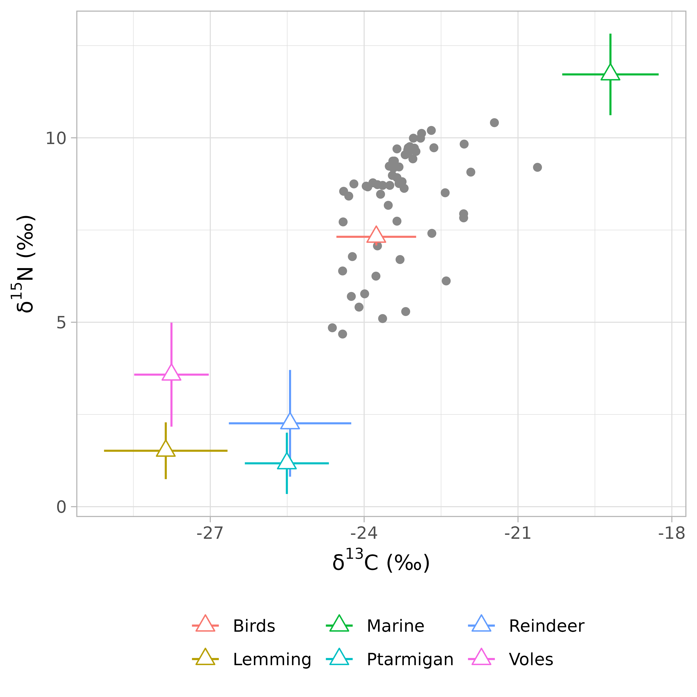
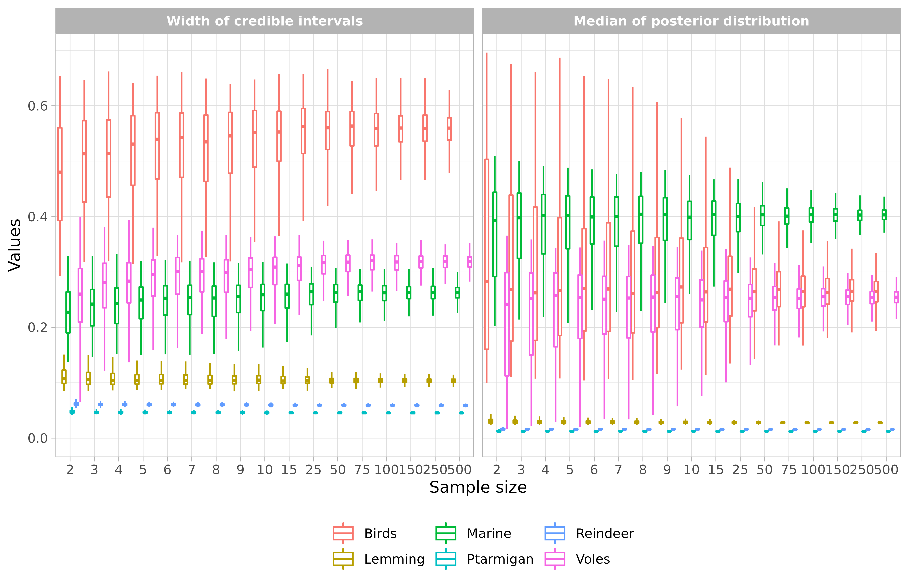
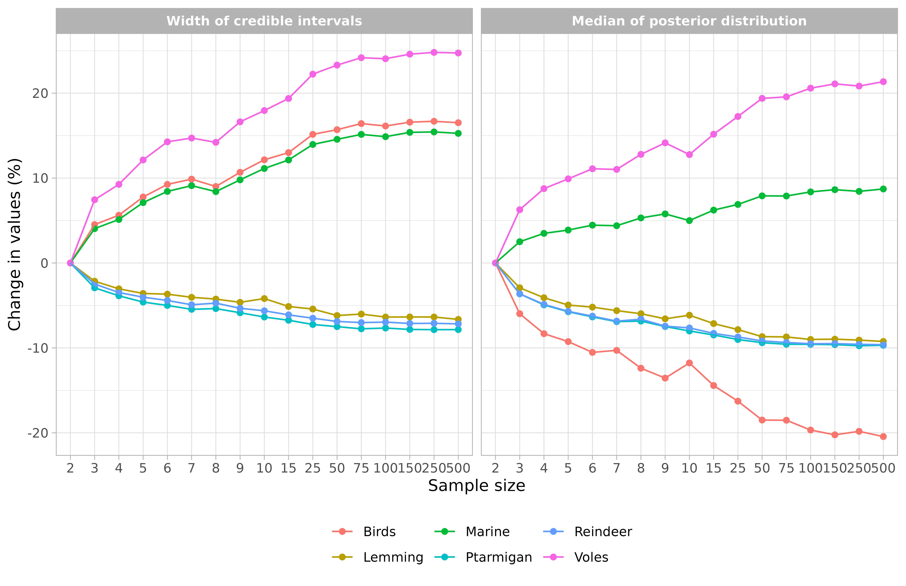
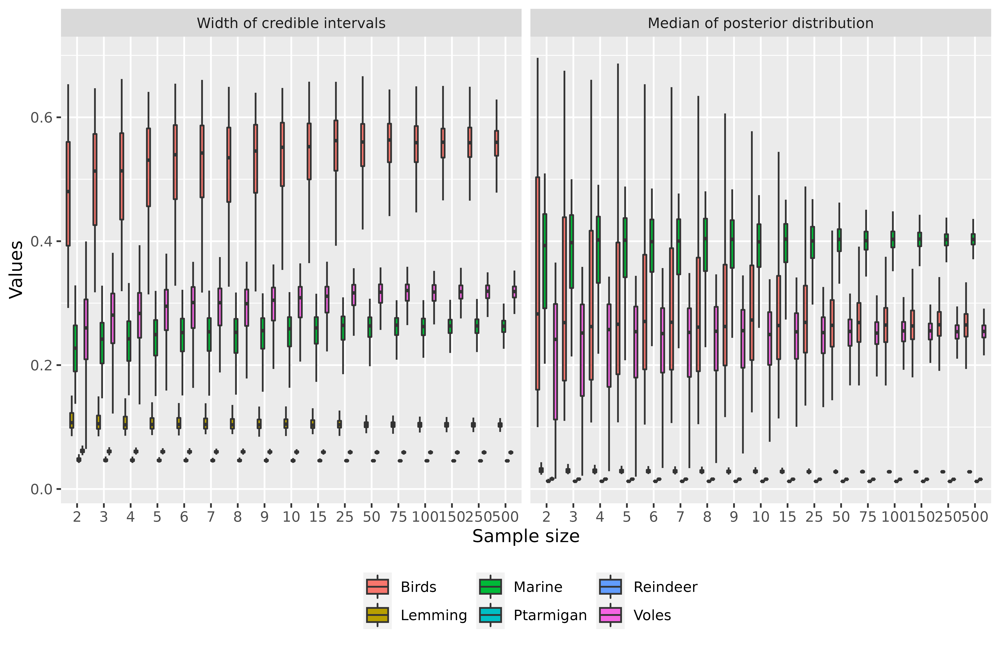
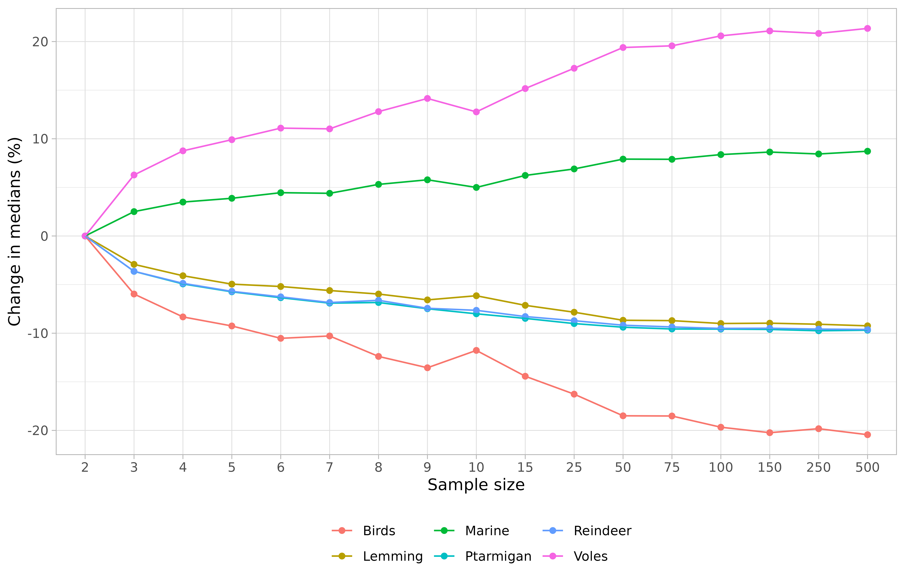

This package allows the investigation of the effect of sample size on estimates and precision of stable isotope mixing solutions calculated with the package siar or the package MixSIAR. Samples sizes are modified assuming a normal distribution with a user defined mean and standard deviation. Samples of different sizes are created from this distribution, and mixing proportions are estimated for several replicates of each sample size using the function siar::siarmcmcdirchletv4() or the function MixSIAR::run_model().
Let’s take a look at the data requirements. samplesim needs three types of data:
Datasets provided in this package come from Killengreen et al. (2011)1
To use these datasets with samplesim we will use the functions MixSIAR::load_mix_data(), MixSIAR::load_source_data() and MixSIAR::load_discr_data() to import and format the data.
This dataset contains the isotopic plasma values of the consumers over two (or more) isotopes. It must be structured in a data frame with two (or more) variables. Each column contains the isotopic plasma values of one isotope. In the example provided, this dataset contains two columns:
d13C, describing the plasma values of the d13C isotoped15N, describing the plasma values of the d15N isotopeEach row of the data frame corresponds to one consumer. Let’s take a look at the dataset available in the samplesim package by importing data with the MixSIAR::load_mix_data() function.
## Get the location of the dataset ----
file_path <- system.file("extdata", "foxes_consumer.csv", package = "samplesim")
## Import isotopic plasma values of the consumers ----
consumer <- MixSIAR::load_mix_data(filename = file_path,
iso_names = c("d13C", "d15N"),
factors = NULL,
fac_random = NULL,
fac_nested = NULL,
cont_effects = NULL)Important: currently samplesim is not develop to deal with random factors or continuous covariate.
Let’s explore this dataset.
## Get the class of the object ----
class(consumer)
#> [1] "list"
## Name of the list elements ----
names(consumer)
#> [1] "data" "data_iso" "n.iso" "n.re" "n.ce"
#> [6] "FAC" "CE" "CE_orig" "CE_center" "CE_scale"
#> [11] "cont_effects" "MU_names" "SIG_names" "iso_names" "N"
#> [16] "n.fe" "n.effects" "factors" "fac_random" "fac_nested"
#> [21] "fere"
## Print the ten first rows of the isotopic values ----
head(consumer$"data_iso", 10)
#> d13C d15N
#> [1,] -23.93 8.67
#> [2,] -24.30 8.42
#> [3,] -21.46 10.41
#> [4,] -23.50 8.71
#> [5,] -24.40 8.55
#> [6,] -23.96 8.69
#> [7,] -24.20 8.75
#> [8,] -20.62 9.20
#> [9,] -23.64 8.71
#> [10,] -22.69 10.20
## Get the name of the isotopes ----
consumer$"iso_names"
#> [1] "d13C" "d15N"
## How many consumers are there in the dataset? ----
consumer$"N"
#> [1] 59For further details on the function MixSIAR::load_mix_data() the reader is referred to the help page of this function.
This dataset contains the isotopic plasma values of the sources over two (or more) isotopes. It must be structured in one of two following formats:
Format #1
A data frame with repeated measurements of plasma isotope (columns) for each source individual (row). In the example provided in samplesim, this dataset contains three columns:
Source: the name of the sources;d13C: the plasma values of the d13C isotope;d15N: the plasma values of the d15N isotope.Format #2
A data frame expressing isotopic plasma values as means and standard deviation. This dataset also contains the sample size of each source. In the example provided in samplesim, this dataset contains six columns:
Sources: the name of the sources;Meand13C: the mean values of the d13C isotope;SDd13C: the standard deviation of the d13C isotope;Meand15N: the mean values of the d15N isotope;SDd15N: the standard deviation of the d15N isotope;n: the sample size of each source.Let’s take a look at the dataset available in the samplesim package by importing data with the function MixSIAR::load_source_data().
## Get the location of the dataset ----
file_path <- system.file("extdata", "foxes_sources.csv", package = "samplesim")
## Import mean isotopic plasma values of the sources (Format #1) ----
sources <- MixSIAR::load_source_data(filename = file_path,
source_factors = NULL,
conc_dep = FALSE,
data_type = "means",
mix = consumer)Note: If your data follow the format #2, replace the value of the argument data_type by raw.
Let’s explore this dataset.
## Get the class of the object ----
class(sources)
#> [1] "list"
## Name of the list elements ----
names(sources)
#> [1] "n.sources" "source_names" "S_MU" "S_SIG"
#> [5] "S_factor1" "S_factor_levels" "conc" "MU_array"
#> [9] "SIG2_array" "n_array" "SOURCE_array" "n.rep"
#> [13] "by_factor" "data_type" "conc_dep"
## Print the mean values of isotopic plasma values ----
sources$"S_MU"
#> Meand13C Meand15N
#> 1 -23.76333 7.316667
#> 2 -27.86783 1.516522
#> 3 -19.19750 11.718500
#> 4 -25.50682 1.175455
#> 5 -25.44462 2.260000
#> 6 -27.75692 3.580000
## Print the SD values of isotopic plasma values ----
sources$"S_SIG"
#> SDd13C SDd15N
#> 1 0.7771658 0.2348333
#> 2 1.2038875 0.7695844
#> 3 0.9401449 1.1056852
#> 4 0.8195143 0.8310677
#> 5 1.1934028 1.4464958
#> 6 0.7273512 1.4099409
## Get the name of the sources ----
sources$"source_names"
#> [1] "Birds" "Lemming" "Marine" "Ptarmigan" "Reindeer" "Voles"
## How many sources are there in the dataset? ----
sources$"n_array"
#> [1] 6 23 20 22 13 13For further details on the function MixSIAR::load_source_data() the reader is referred to the help page of this function.
This dataset contains the trophic discrimination factor (TDF) of two (or more) isotopes for each source. It must be structured following the format #2 of the sources dataset. In the example provided in samplesim, this dataset contains five columns:
Sources: the name of the sources;Meand13C: the mean values of the TDF for the d13C isotope;SDd13C: the standard deviation of the TDF for the d13C isotope;Meand15N: the mean values of the TDF for the d15N isotope;SDd15N: the standard deviation of the TDF for the d15N isotope.Let’s take a look at the dataset available in the samplesim package by importing data with the function MixSIAR::load_discr_data().
## Get the location of the dataset ----
file_path <- system.file("extdata", "foxes_discrimination.csv", package = "samplesim")
## Import TDF values ----
discr <- MixSIAR::load_discr_data(filename = file_path, mix = consumer)Let’s explore this dataset.
## Get the class of the object ----
class(discr)
#> [1] "list"
## Name of the list elements ----
names(discr)
#> [1] "mu" "sig2"
## Print the mean values of TDF ----
discr$"mu"
#> Meand13C Meand15N
#> Birds 0 0
#> Lemming 0 0
#> Marine 0 0
#> Ptarmigan 0 0
#> Reindeer 0 0
#> Voles 0 0
## Print the SD values of TDF ----
discr$"sig2"
#> SDd13C SDd15N
#> Birds 0 0
#> Lemming 0 0
#> Marine 0 0
#> Ptarmigan 0 0
#> Reindeer 0 0
#> Voles 0 0For further details on the function MixSIAR::load_discr_data() the reader is referred to the help page of this function.
The function samplesim::plot_isospace() represents consumer and sources data in the isotopic space. This function is an adaptation of MixSIAR::plot_data() function and add color to source data. If you want you can export plot in PDF and/or PNG format.
samplesim::plot_isospace(mix = consumer, source = sources, discr = discr)
If you prefer you can also used the MixSIAR::plot_data().
If your data make sense, let’s move forward!
The core function of the package is samplesim::samplesim(). It allows investigating the effect of sample size on estimates and precision of stable isotope mixing solutions. More specifically samplesim::samplesim() assesses the sensitivity of isotopes mixing models to variation in numbers of samples from source tissues. This tool can be used prior to full-blown studies in a similar manner than power analyses. It used the function siar::siarmcmcdirichletv4() developed by Andrew Parnell and available in the package siar. samplesim can also be used with the package MixSIAR developed by Brian Stock et al.. User can choose to sample one particular source, or all the sources. User can also choose to modify consumer data. Sample sizes are modified assuming a normal distribution with a user defined mean and standard deviation. Samples of different sizes are created from this distribution, and mixing proportions are estimated for several replicates of each sample size.
The general writing of samplesim::samplesim() is:
samplesim::samplesim(package = "siar",
mix = consumer,
source = sources,
discr = discr,
type = NULL,
nsamples = NULL,
modify = NULL,
nrep = 100,
interval = 90,
name = NULL,
resid_err = TRUE,
process_err = FALSE,
run = "test",
alpha.prior = 1,
path = ".")with:
package, the package name to be used to estimate mixing proportions. Must be one of 'siar' or 'mixsiar'.mix, the output returned by the MixSIAR::load_mix_data() function and containing consumer isotope values (see Consumers data section).source, the output returned by the MixSIAR::load_source_data() function and containing mean and standard deviation isotope values of sources (and in some case raw values; see Preys data section).discr, the output returned by the MixSIAR::load_discr_data() function and containing TDF values (see Discrimation data section).type, the type of analysis to be run. Must be one of 'one source', 'all sources' or 'consumer'.nsamples, a vector with the sample sizes to simulate.modify, the name of the source to modify (case sensitive). This argument has to be specified when the argument type = 'one source'. Otherwise it will be ignored.nrep, an integer specifying the number of replicates for each sample sizes. Default is 100.interval, an integer indicating the width of credible interval to use for precision estimation. Default is 90.name, a character string giving the name of the simulation. If NULL the simulation will be named by the time of the simulation. This name will be used to create a directory (in path) in which results will be stored.resid_err, a boolean indicating if residual error is included in the model. See ?MixSIAR::run_model for further information. Only necessary if package = 'mixsiar'.process_err, a boolean indicating if process error is included in the model. See ?MixSIAR::run_model for further information. Only necessary if package = 'mixsiar'.run, a string or a list specifying MCMC parameters. See ?MixSIAR::run_model for further information. Only necessary if package = 'mixsiar'.alpha.prior, a numeric giving the Dirichlet prior on p.global. See ?MixSIAR::run_model for further information. Only necessary if package = 'mixsiar'.path, the directory in which the directory name will be created.Let’s take an example. We will assess the impact of the sample size of one source: the source #6 (Voles) with several sample sizes (from 2 to 500). The analysis will be repeated 999 times.
## samplesim run for one source ----
samplesim::samplesim(package = "siar",
mix = consumer,
source = sources,
discr = discr,
type = "one source",
nsamples = c(2:10, 15, 25, 50, 75, 100, 150, 250, 500),
modify = "Voles",
nrep = 999,
interval = 90,
name = "test_siar",
resid_err = TRUE,
process_err = FALSE,
run = "test",
alpha.prior = 1,
path = ".")This function does not return any object in the R console. Instead, results are stored in the directory ./test_siar/ and they will need to be imported for results visualization (see below).
Note 1: if you want to estimate sample size impacts of all sources, you need to set type = "all source". If you want to assess the impact of the sample size of consumers, you have to set type = "consumer".
Note 2: the use of samplesim with the package MixSIAR requires the installation of the software JAGS. See the MixSIAR documentation for further details.
The samplesim::samplesim() function has stored four objects results.
## Objects created by samplesim ----
list.files("./test_siar")#> [1] "datasets.rds" "intervals.rds" "logfile.txt" "medians.rds"
#> [5] "widths.rds"intervals, a four dimensions array with the upper and lower bounds of the credible interval for each sample size, replicate and source. First dimension represents lower and upper bounds; second dimension corresponds to the number of sources; third dimension is the number of replicates; and fourth dimension is the number of sample size.
widths, a three dimensions array with the width (precision) of credible intervals for each source, each replicate and each sample size. First dimension corresponds to the number of replicates; second dimension is the number of sources; and third dimension represents the number of sample size.
medians, a three dimensions array with the median (estimate) of credible intervals for each source, each replicate and each sample size. Dimensions are the same as for widths object.
datasets, a four dimensions array with all resampled datasets.
A logfile.txt is also written and contains all parameters of the simulation. Here’s what it looks like.
#> ====================================================
#> SampleSim - User-defined parameters
#> ====================================================
#>
#> Simulation name: test_siar
#> Date: 2017-10-30 10:04:15
#>
#> Type of sampling: one source
#> Package: siar
#> Modified source: 6
#> Modified source name: Voles
#> Number of replicates by sample size: 999
#> Sample sizes: 2, 3, 4, 5, 6, 7, 8, 9, 10, 15, 25, 50, 75, 100, 150, 250, 500
#> Credible intervals width: 90
#>
#> ====================================================Now, let’s take a look at the results by importing the medians dataset using the R function readRDS().
## Import medians of credible intervals ----
medians <- readRDS("./test_siar/medians.rds")
## Structure of the object ----
class(medians)
#> [1] "array"
## Names of the dimensions ----
names(dimnames(medians))
#> [1] "replicate" "source" "size"
## Names of the content of the second dimension ----
dimnames(medians)[[2]]
#> [1] "Birds" "Lemming" "Marine" "Ptarmigan" "Reindeer" "Voles"
## Names of the content of the third dimension ----
dimnames(medians)[[3]]
#> [1] "size2" "size3" "size4" "size5" "size6" "size7" "size8"
#> [8] "size9" "size10" "size15" "size25" "size50" "size75" "size100"
#> [15] "size150" "size250" "size500"These data are structured in a three dimensions array.
## Extract results of the first replicate ----
medians[1, , ]
#> size
#> source size2 size3 size4 size5 size6 size7
#> Birds 0.22080350 0.62776762 0.61264482 0.13644333 0.19865157 0.26184595
#> Lemming 0.02704969 0.03482263 0.03805547 0.02807075 0.02751753 0.02795190
#> Marine 0.42091005 0.23480681 0.24266042 0.45337319 0.43871829 0.40974112
#> Ptarmigan 0.01244359 0.01208809 0.01252034 0.01555207 0.01377745 0.01226371
#> Reindeer 0.01535749 0.01559465 0.01592543 0.01971076 0.01657033 0.01543635
#> Voles 0.28001983 0.04745384 0.04884126 0.32207617 0.28228077 0.25116073
#> size
#> source size8 size9 size10 size15 size25 size50
#> Birds 0.30183044 0.38733648 0.45307513 0.23657613 0.20437907 0.19557516
#> Lemming 0.02996436 0.03511950 0.03200601 0.02626679 0.02580987 0.02752152
#> Marine 0.37579274 0.35325378 0.31980564 0.41866550 0.43434101 0.43018413
#> Ptarmigan 0.01213490 0.01211281 0.01258004 0.01210336 0.01230684 0.01316829
#> Reindeer 0.01512387 0.01559267 0.01533496 0.01567057 0.01619438 0.01614120
#> Voles 0.24124771 0.16962741 0.13970420 0.26877743 0.28654289 0.29286748
#> size
#> source size75 size100 size150 size250 size500
#> Birds 0.28078702 0.22214590 0.27372852 0.25991626 0.29124615
#> Lemming 0.02644967 0.02626701 0.02796518 0.02962388 0.02789958
#> Marine 0.39470291 0.42120758 0.40157259 0.40626463 0.39048758
#> Ptarmigan 0.01221670 0.01292731 0.01233238 0.01226029 0.01248259
#> Reindeer 0.01583279 0.01628207 0.01517927 0.01536641 0.01498031
#> Voles 0.24749316 0.27596295 0.24781857 0.25384720 0.24353906
## Compute mean over replicates ----
apply(medians, 3:2, mean)
#> source
#> size Birds Lemming Marine Ptarmigan Reindeer Voles
#> size2 0.3329619 0.03061553 0.3705592 0.01363248 0.01732562 0.2094417
#> size3 0.3130829 0.02972203 0.3798494 0.01313642 0.01669658 0.2225842
#> size4 0.3052444 0.02936399 0.3834885 0.01296013 0.01648190 0.2277861
#> size5 0.3021503 0.02909928 0.3849340 0.01284955 0.01633875 0.2301904
#> size6 0.2979120 0.02902469 0.3870687 0.01276708 0.01624129 0.2326831
#> size7 0.2987177 0.02889796 0.3868250 0.01269072 0.01613967 0.2325208
#> size8 0.2917118 0.02878715 0.3902268 0.01269980 0.01617898 0.2362354
#> size9 0.2878275 0.02860285 0.3919790 0.01261217 0.01603715 0.2390753
#> size10 0.2937751 0.02873353 0.3890670 0.01254136 0.01600089 0.2361770
#> size15 0.2849223 0.02843139 0.3936390 0.01247700 0.01588973 0.2412083
#> size25 0.2787882 0.02821472 0.3961160 0.01240432 0.01581604 0.2455782
#> size50 0.2713784 0.02796116 0.3998587 0.01235301 0.01573552 0.2500490
#> size75 0.2713068 0.02795011 0.3997937 0.01232842 0.01570429 0.2504130
#> size100 0.2674633 0.02785936 0.4015903 0.01232672 0.01567834 0.2525580
#> size150 0.2655944 0.02786962 0.4025579 0.01232220 0.01568122 0.2536192
#> size250 0.2669552 0.02783585 0.4018200 0.01230325 0.01566581 0.2530809
#> size500 0.2648996 0.02778607 0.4028678 0.01231153 0.01565910 0.2541631The structure of the widths dataset is the same as for medians.
If you are uncomfortable to deal with three dimensions arrays, you can use the function samplesim::get_output(). This function converts these two arrays (i.e. medians and widths) into an unique data frame. For instance:
## Import medians and widths of credible intervals ----
datas <- samplesim::get_output("test_siar")
## Structure of the data frame ----
str(datas)
#> 'data.frame': 203796 obs. of 5 variables:
#> $ source : Factor w/ 6 levels "Birds","Lemming",..: 1 1 1 1 1 1 1 1 1 1 ...
#> $ size : Factor w/ 17 levels "2","3","4","5",..: 1 1 1 1 1 1 1 1 1 1 ...
#> $ replicate: Factor w/ 999 levels "1","2","3","4",..: 1 2 3 4 5 6 7 8 9 10 ...
#> $ value : num 0.221 0.233 0.336 0.238 0.141 ...
#> $ type : Factor w/ 2 levels "Width of credible intervals",..: 2 2 2 2 2 2 2 2 2 2 ...
## Print the first ten and last ten rows ----
rbind(head(datas, 10), tail(datas, 10))
#> source size replicate value type
#> 1 Birds 2 1 0.2208035 Median of posterior distribution
#> 2 Birds 2 2 0.2325955 Median of posterior distribution
#> 3 Birds 2 3 0.3355217 Median of posterior distribution
#> 4 Birds 2 4 0.2384504 Median of posterior distribution
#> 5 Birds 2 5 0.1406412 Median of posterior distribution
#> 6 Birds 2 6 0.1313651 Median of posterior distribution
#> 7 Birds 2 7 0.1406878 Median of posterior distribution
#> 8 Birds 2 8 0.4972696 Median of posterior distribution
#> 9 Birds 2 9 0.1141554 Median of posterior distribution
#> 10 Birds 2 10 0.5580302 Median of posterior distribution
#> 203787 Voles 500 990 0.2762944 Width of credible intervals
#> 203788 Voles 500 991 0.3304657 Width of credible intervals
#> 203789 Voles 500 992 0.3401727 Width of credible intervals
#> 203790 Voles 500 993 0.3237540 Width of credible intervals
#> 203791 Voles 500 994 0.3211363 Width of credible intervals
#> 203792 Voles 500 995 0.3165708 Width of credible intervals
#> 203793 Voles 500 996 0.3249547 Width of credible intervals
#> 203794 Voles 500 997 0.3427264 Width of credible intervals
#> 203795 Voles 500 998 0.3221002 Width of credible intervals
#> 203796 Voles 500 999 0.3274339 Width of credible intervalsIf you want to select only the widths data,
## Extract widths of credible intervals ----
widths <- datas[datas$type == "Width of credible intervals", ]
## Check ----
rbind(head(widths, 10), tail(widths, 10))
#> source size replicate value type
#> 101899 Birds 2 1 0.5462044 Width of credible intervals
#> 101900 Birds 2 2 0.4793033 Width of credible intervals
#> 101901 Birds 2 3 0.5383797 Width of credible intervals
#> 101902 Birds 2 4 0.5207835 Width of credible intervals
#> 101903 Birds 2 5 0.3767518 Width of credible intervals
#> 101904 Birds 2 6 0.3269237 Width of credible intervals
#> 101905 Birds 2 7 0.3800338 Width of credible intervals
#> 101906 Birds 2 8 0.5436314 Width of credible intervals
#> 101907 Birds 2 9 0.3392450 Width of credible intervals
#> 101908 Birds 2 10 0.4495638 Width of credible intervals
#> 203787 Voles 500 990 0.2762944 Width of credible intervals
#> 203788 Voles 500 991 0.3304657 Width of credible intervals
#> 203789 Voles 500 992 0.3401727 Width of credible intervals
#> 203790 Voles 500 993 0.3237540 Width of credible intervals
#> 203791 Voles 500 994 0.3211363 Width of credible intervals
#> 203792 Voles 500 995 0.3165708 Width of credible intervals
#> 203793 Voles 500 996 0.3249547 Width of credible intervals
#> 203794 Voles 500 997 0.3427264 Width of credible intervals
#> 203795 Voles 500 998 0.3221002 Width of credible intervals
#> 203796 Voles 500 999 0.3274339 Width of credible intervalsThe argument change of the function samplesim::get_output() allows to compute the percentage of change of medians and widths respectively, based on a reference value of sample size (argument reference; default is the minimum sample size). For instance,
## Import medians and widths of credible intervals expressed as percentage of change ----
datas <- samplesim::get_output(name = "test_siar", change = TRUE, reference = 2)
## Structure of the data frame ----
str(datas)
#> 'data.frame': 204 obs. of 4 variables:
#> $ size : Factor w/ 17 levels "2","3","4","5",..: 1 2 3 4 5 6 7 8 9 10 ...
#> $ source: Factor w/ 6 levels "Birds","Lemming",..: 1 1 1 1 1 1 1 1 1 1 ...
#> $ value : num 0 -5.97 -8.32 -9.25 -10.53 ...
#> $ type : Factor w/ 2 levels "Width of credible intervals",..: 2 2 2 2 2 2 2 2 2 2 ...
## Print the first ten and last ten rows ----
rbind(head(datas, 10), tail(datas, 10))
#> size source value type
#> 1 2 Birds 0.000 Median of posterior distribution
#> 2 3 Birds -5.970 Median of posterior distribution
#> 3 4 Birds -8.325 Median of posterior distribution
#> 4 5 Birds -9.254 Median of posterior distribution
#> 5 6 Birds -10.527 Median of posterior distribution
#> 6 7 Birds -10.285 Median of posterior distribution
#> 7 8 Birds -12.389 Median of posterior distribution
#> 8 9 Birds -13.555 Median of posterior distribution
#> 9 10 Birds -11.769 Median of posterior distribution
#> 10 15 Birds -14.428 Median of posterior distribution
#> 195 9 Voles 16.622 Width of credible intervals
#> 196 10 Voles 17.953 Width of credible intervals
#> 197 15 Voles 19.374 Width of credible intervals
#> 198 25 Voles 22.240 Width of credible intervals
#> 199 50 Voles 23.303 Width of credible intervals
#> 200 75 Voles 24.175 Width of credible intervals
#> 201 100 Voles 24.054 Width of credible intervals
#> 202 150 Voles 24.592 Width of credible intervals
#> 203 250 Voles 24.804 Width of credible intervals
#> 204 500 Voles 24.730 Width of credible intervalsHere we notice that the column replicate is omitted and percentages of change are aggregated over replicates.
The samplesim package also offers the possibility of visualizing the effect of sample size on the width of the credible interval and on the median of the posterior distribution of the mixing models. This is possible with the function samplesim::plot_samplesim().
## Visualize results ----
samplesim::plot_samplesim(name = "test_siar")
If you prefer you can represent the percentages of change:
# Visualize results expressed as percentages of change
samplesim::plot_samplesim(name = "test_siar", change = TRUE, reference = 2)
Finally, if you are not satisfied with the quality of the graph, you can customize it by 1) importing data and 2) programming your own graph. Let’s take an example with the ggplot2 package (used in samplesim).
## Import medians and widths of credible intervals ----
datas <- get_output("test_siar")
ggplot(aes(x = size, y = value), data = datas) +
geom_boxplot(aes(fill = source), width = 0.8, outlier.shape = NA) +
labs(x = "Sample size", y = "Values", fill = "Sources") +
theme(legend.position = "bottom", legend.title = element_blank()) +
facet_grid(. ~ type)
Or your can only represent the medians values. For instance (with percentages of change):
## Import medians and widths of credible intervals ----
datas <- samplesim::get_output(name = "test_siar", change = TRUE)
## Select only medians of credible intervals ----
medians <- datas[datas$"type" == "Median of posterior distribution", ]
ggplot(aes(x = size, y = value, group = source), data = medians) +
geom_point(aes(color = source)) +
geom_line(aes(color = source)) +
labs(x = "Sample size", y = "Change in medians (%)", color = "Sources") +
theme_light() +
theme(legend.position = "bottom", legend.title = element_blank())
Lecomte N., Ehrich D., Casajus N., Berteaux D., Cameron C., and Yoccoz N.G. How many is enough? An R package for evaluating the effect of sample size on estimates and precision of stable isotope mixing solutions. Submitted to Methods in Ecology and Evolution.
Killengreen S., Lecomte N., Ehrich D., Schott T., Yoccoz N.G. and Ims R.A. (2011) The importance of marine vs. human-induced subsidies in the maintenance of an expanding mesocarnivore in the arctic tundra. Journal of Animal Ecology, 80, 1049-1060.↩︎